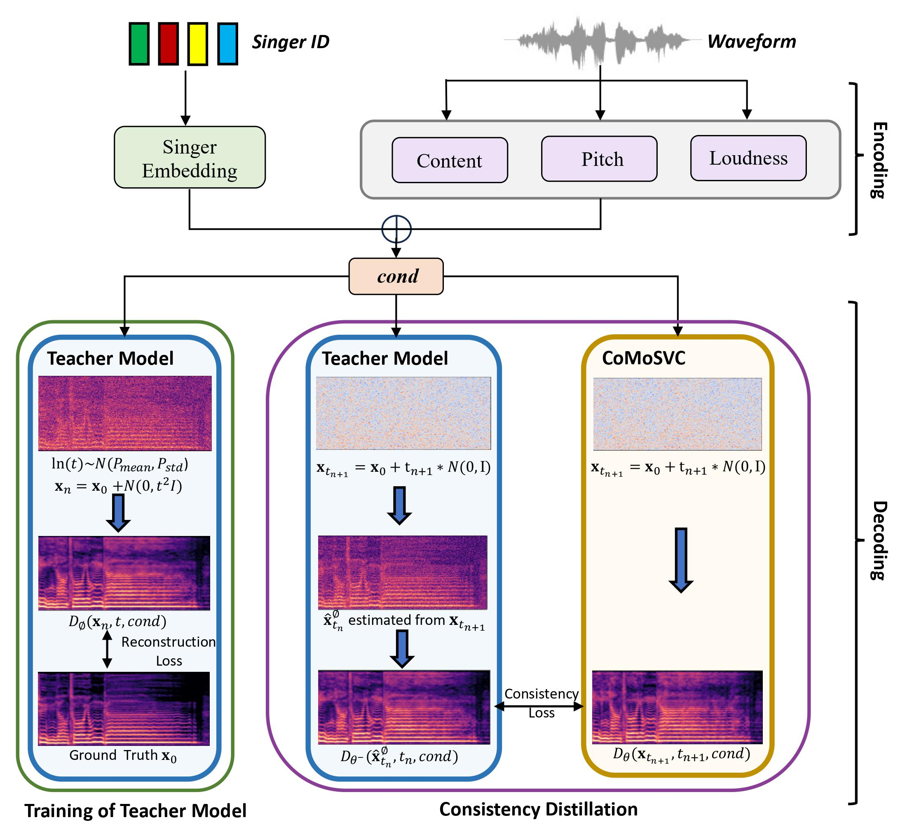
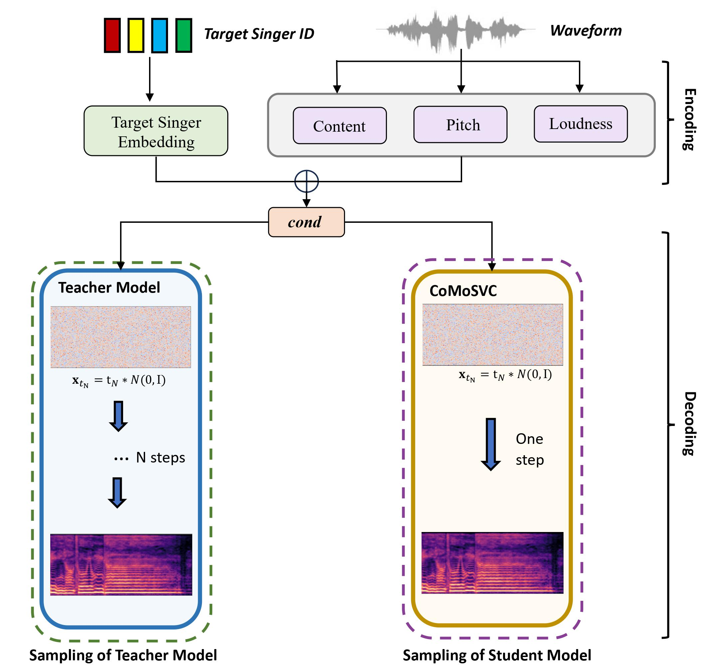

The diffusion-based Singing Voice Conversion (SVC) methods have achieved remarkable performances, producing natural audios with high similarity to the target timbre. However, the iterative sampling process results in slow inference speed, and acceleration thus becomes crucial. In this paper, we propose CoMoSVC, a consistency model-based SVC method, which aims to achieve both high-quality generation and high-speed sampling. A diffusion-based teacher model is first specially designed for SVC, and a student model is further distilled under self-consistency properties to achieve one-step sampling. Experiments on a single NVIDIA GTX4090 GPU reveal that although CoMoSVC has a significantly faster inference speed than the state-of-the-art (SOTA) diffusion-based SVC system, it still achieves comparable or superior conversion performance based on both subjective and objective metrics.

Figure 1: The Training Process

Figure 2: The Inference Process
Singing Voice Conversion
The below table and audio samples show the comparison between DiffSVC(100 Sampling Steps), SoVITS-Diff(1000 Sampling Steps), SoVITS-Flow, Teacher Model(50 Sampling Steps) and our CoMoSVC (1 Sampling Steps) .